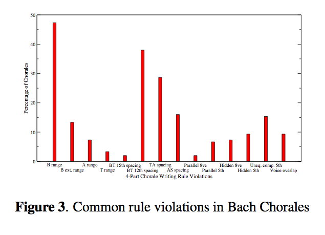

ISMIR Day 3 - MIR Methods and Platforms (Sporking the Shreds)
A Tunneling-Vantage Indexing Method for Non-Metrics
Rainer Typke and Agatha Walczak-TypkeRanier and Agatha are looking at creating an instance of the Earth Mover's Distance that can be used to compare rhythmical patterns. hey use a unique way of pre-calcuating tunnels between the subspaces that link nearest in the different subspaces. Evaluation: 40,000 sequences with random errors. With large search radiuses they get decent precisions (they get perfect recall). "It's always a good idea to closely inspect your balls - their shape might allow you to apply optimum vantage indexing to your favorite metric, resulting in retrieval in O(Log n) without any false positives or false negatives.

The Perlhumdrum and Perllilypond Toolkits for Symbolic Music Information Retrieval
Ian KnopkeAn alternative toolkit for working with large collections of Humdrum files. Works with Lilypond. Humdrum is designed for the analysis of music in symbolic form. Humdrum is getting stale - many of the tools run in awk (Woohoo!) that just don't work anymore with the latest awk. So Ian started rewriting them all in Perl. Eventually he decided that there might be a better way to go instead of just rewriting humdrum piece by piece. Ian walked us through some humdrum notation, and the new PerlHumdrum, and PerlLilypond toolkits. Eleanor Selfridge asked some questions about how people should use PerlHundrum - should they use the scripts or some higher level packaging.

Support for MIR Prototyping and Real-Time Applications in the ChucK Programming Language
Rebecca Fiebrink, Ge Wang and Perry CookRebecca and Ge talk about using ChucK for MIR prototyping. First Ge gave the quick overview of ChucK (this was a very quick summary of what we learned in the ChucK tutorial). Rebecca went on to talk about ChucK in the performance context. One unique things about ChucK is that you can write code in a performance context. Ge gave a demo with the MiniAudicle. Ge once again was writing code during a talk. They moved onto showing how ChucK can be used for analysis (with the aptly named 'upchuck' operator). Implications for MIR: feature extraction, algorithms, with on the fly modifications to let you try things quickly, simple concurrency. Easy to teach and learn, hands-on, immediate feedback - real-time MIR, specially in live performance. Weka-style API analysis - you can do classification an run it on the fly. You could even train a classifier during a performance (so not just perfomrance coding, but performance machine learning - woah).
Rebecca gave a great demo showing live feature extraction, extracting marsyas-like features, along with an adaboost classifier. Rebecca did live training - classical piano for one class, and orchestral for another class. The classifier worked really well.
Rebecca is the Keith Emerson of PlorK (although she doesn't know who Keith Emerson is)
Hopes: - want to see more MIR work done in real-time contexts. Think that this may be a different way to think and do things.
TakeOut - chuck is unique, analysis and synthesis in the same framework, strongly timed, on the fly is great for rapid prototyping.
SMIRK - smirk.cs.princeton.edu